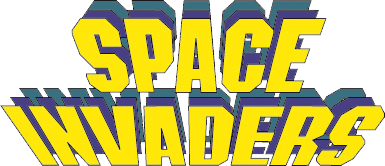

Place aux jeux !
Introduction
Jusqu'à maintenant, nous avons travaillé sur des problèmes jouets pour illustrer différents concepts d'architecture. Je vous propose maintenant de laisser libre court à votre imagination et de programmer votre architecture. Rien de tel alors que de se lancer le défi de programmer un jeu. Alors, n'exagérons pas, notre architecture est limitée à bien des égards : la fréquence d'horloge qui est dépendante de la fréquence à laquelle notre circuit peut être simulé n'excédera que difficilement le kHz (nos ordinateurs sont cadencés à une fréquence 10000000 plus grande), on va ajouter un petit écran de 16x16 pixels monochrome et on va essayer de ne pas être exagérément ambitieux quand au jeu que nous devons écrire en assembleur. Mais soit, faisons avec;
Je vous propose d'utiliser l'architecture
archi_jeu.circ ainsi que le microcode
microcode_jeu.rom.
Comme nouveautés, j'ai ajouté deux nouvelles instructions :
- STAB (0x1800) : Place le contenu du registre A à l'adresse contenue dans le registre B :Mem[B] := A
- STBA (0x2800) : Place le contenu du registre B à l'adresse contenu dans le registre A :Mem[A] := B
Le programme Python assembleur
assemble_jeu.py prends en compte ces deux nouvelles instructions.
Au niveau des périphériques, notre mini console dispose:
- d'un clavier, qui signale la présence d'un caractère par interruption son buffer étant accessible en lecture à l'adresse 0x1003
- d'un écran de 16 x 16 pixels monochromes; un périphérique de sortie pour lequel on renseigne le contenu des lignes individuellement. Chaque pixel peut avoir l'état 0 ou 1. Une ligne pleine sera par exemple codée avec la valeur 0xFFFF
L'écran est couplé au chemin de données par l'intermédiaire d'un composant appelé pompeusement "CarteGraphique". N'hésitez pas à cliquer avec le "Poke Tool" sur ce composant pour inspecter son contenu. Notre carte graphique dispose de deux blocs de buffers, chaque bloc étant constitué de 16 registres 16 bits pour définir la couleur de chaque pixel de l'écran. Ces deux blocs de buffers constituent ce qu'on appelle du
double buffering. Par la suite j'appelle buffer un bloc de 16 registres de 16 bits. On dispose donc de deux buffers. Sans double buffering, puisque chaque des lignes est adressée individuellement, on verrait visuellement la mise à jour progressive de chaque ligne et le rendu ne serait pas très agréable. Avec le double buffering, l'un de ces buffers, le front buffer, alimente l'écran. Pendant ce temps, on écrit une nouvelle image dans l'autre buffer, le back buffer. Une fois l'image complètement écrite en mémoire, on permute le rôle des front buffer et back buffer. On voit alors d'un coup, la nouvelle image.
En pratique, le composant CarteGraphique dispose :
- de 16 registres 16 bits adressables aux adresses 0x2000, 0x2001, 0x2002, ... 0x200F
- d'un registre 16 bit adressable à l'adresse 0x2010 qui définit quel buffer est le front buffer et quel buffer est le back buffer
Le registre est de 16 bits pour se faciliter la vie avec la compatibilité avec nos bus 16 bits. En pratique, seul le bit de poids faible est utilisé pour sélectionner le front et back buffer. Donc :
- LDAi 0000 ; STA 0x2010 : sélectionne le buffer "de gauche" en front buffer et le buffer "de droite" en back buffer
- LDAi 0001 ; STA 0x2010 : sélectionne le buffer "de gauche" en back buffer et le buffer "de droite" en front buffer
Pour utiliser ce système de double buffering, on remplira alors toute l'image en adressant toutes les lignes puis on terminera par permuter les front et back buffers pour déclencher l'affichage de l'image.
A titre d'illustration, je vous propose ci-dessous une petite vidéo d'une réalisation d'un mini space invaders. Pendant la vidéo, les tirs sont générés en appuyant sur le touche "L", les touches "Q" et "D" déplacent la plateforme à gauche et à droite. Soyez patient, la video dure 5 minutes, ... le processeur est cadencé au mieux à 1 kHz. Je vous donne également le
code source en assembleur si vous souhaitez utiliser ce jeu comme point de départ.